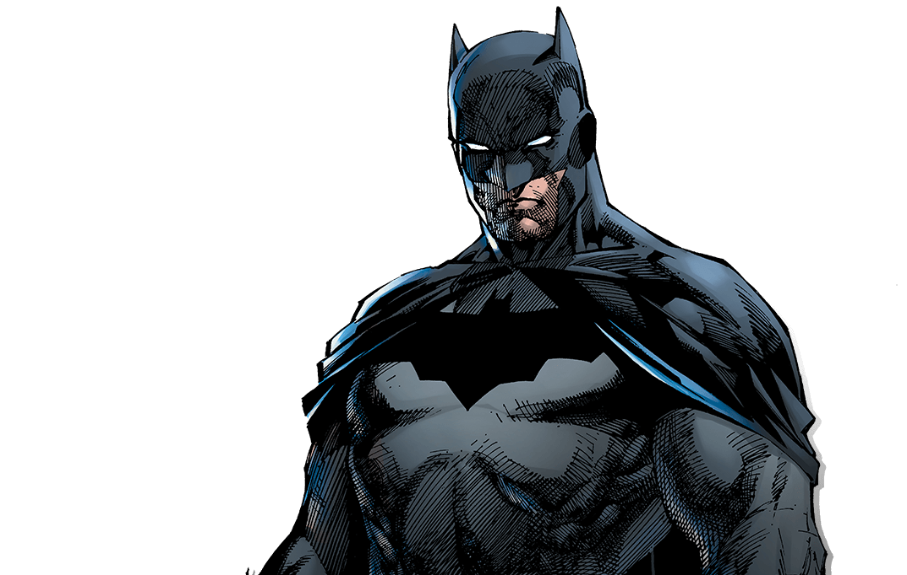

I am vengeance, I am the night, I am Batman!
Batman has been Gotham's protector for decades, CEO of Wayne Enterprises, Patriarch of the Bat Family and veteran member of the Justice League. Batman is a superhero co-created by artist Bob Kane and writer Bill Finger and published by .
The character made his first appearance in Detective Comics #27 (May, 1939).
Batman is the secret identity of Bruce Wayne. Witnessing the murder of his parents as a child leads him to train himself to physical and intellectual perfection and don a bat-themed costume in order to fight crime. Batman operates in Gotham City, assisted by various supporting characters including his sidekick Robin and his butler Alfred Pennyworth, and fights an assortment of villains influenced by the characters' roots in film and pulp magazines.
Unlike most superheroes, he does not possess any superpowers; he makes use (to the best that he can) of intellect, detective skills, science and technology, wealth, physical prowess, and intimidation in his war on crime.
Main Skills
- Martial arts and combat
- Wall climbing
- Offensive driving
- Strategic thinking
- Criminology, forensic psychology, profiling

Fun Facts
It's Batman who unites the Justice League, but where did the Dark Knight get his start? We do our detective work and uncover his comic book origins, from the tragic death of his parents to his training to become one of the best martial artists on the planet.
Batman may not have super-powers, but it's hard to imagine the Justice League without him.
Who needs superpowers when you have an endless supply of randomly awesome gadgets at your disposal? No matter what the situation -- falling from tall heights, swimming underwater, getting turned into a baby, fighting the Hulk, having his leg gnawed on by a shark in midair -- Batman seems to always have the right tool for the job. Guess that's what a boat load of money and the power of prep time will do for you.
Checkout this site for more info about .

The Batmobile first appeared in Detective Comics #27 (May, 1939), where it was depicted as an ordinary-looking, red car. Its appearance has varied, but since its earliest appearances, the Batmobile has had a prominent bat motif, typically including wing-shaped tailfins.
Armored in the early stages of Batman's career, it has been customized over time and is the most technologically advanced crime-fighting asset in Batman's arsenal.


" Come with me. Save yourself. You don't owe these people any more. You've given them everything. "